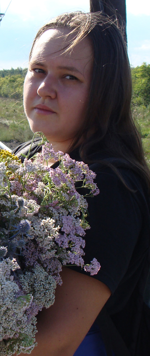

О нас
Меня зовут Александра. Занимаюсь флористикой уже больше 10 лет.
Все цветы для букетов выращиваю сама и выбираю для Вас только самые лучшие, только что распустившиеся соцветия.
Вы можете заказать букет любого размера, от самых маленьких до просто огромных, и для любого повода. в том числе собираю и свадебные букеты. Так же можно заказать просто срезку, без составления композиции. Состав букета, цветовая гаммма, оформление и прочие детали оговариваются при заказе. Наличие тех или иных цветов стоит уточнять, так как сезон многих из них недолог и может длиться всего несколько недель.